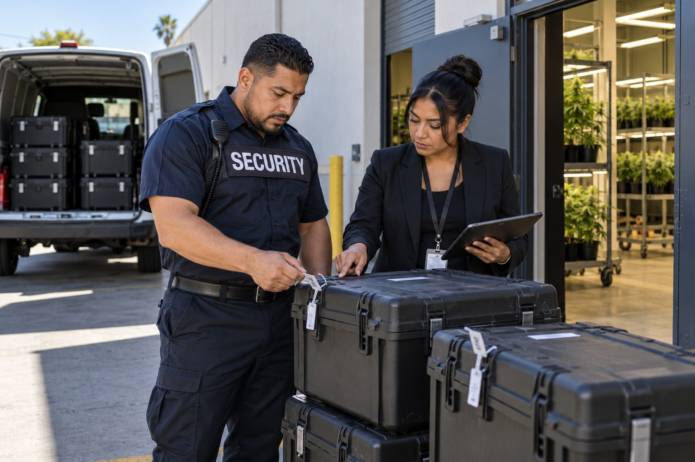

Cannabis and Cash Transport Security

Businesses may need security assistance connected with an existing transfer arrangement or may be seeking clarity about what support can be provided. The inquiry can involve a licensed cannabis business, a cash handling operation or a company using another authorized provider. Those circumstances have different requirements and should not be grouped into one generic transport promise.

Security Support for Business Transfers
Paradigm’s role is reviewed in relation to the proposed service. The public page explains that security support may be requested, but it does not publish transfer procedures, movement details or client arrangements. Clients should have a clear understanding of who is responsible for the security role and who is responsible for the underlying transportation activity.
Cash Transfers and Cannabis Transport Are Distinct
A request involving cash is different from a request involving cannabis goods. The fact that both involve valuable property does not make their authorizations or responsibilities identical. The consultation identifies whether the client is requesting security assistance, an accompanying security role or another service that needs separate confirmation.
California’s Department of Cannabis Control states that a distribution license is needed to transport cannabis and cannabis products. Providing guards at a cannabis premises does not by itself demonstrate that transportation authorization. Any service involving cannabis movement must account for the authorized business activity and the responsible provider.
Responsibilities That Must Be Confirmed
The service scope should establish whether Paradigm is providing security personnel and whether another provider is responsible for transportation or custody. This distinction matters to the client’s understanding of the assignment. It avoids presenting a general security inquiry as a confirmed full transport service before the actual arrangements have been reviewed.
This page does not claim a dedicated armored vehicle fleet, a cannabis distribution license or automatic acceptance of cash custody. It also does not publish details about particular transfers. Those are material aspects of an assignment that require direct confirmation. A useful service description explains the role under assessment while reserving the specific arrangements for the authorized participants.
Transfer Security Requirements
Paradigm serves security clients across Los Angeles County and San Bernardino County. Businesses can contact the team to review whether the proposed assignment falls within available services and how it relates to existing premises coverage. A dispensary may need both forms of support, but each scope should be defined separately.
Contact Paradigm to explain the type of business and the kind of security assistance you are seeking. The consultation will clarify the service available, the responsibilities of each provider and the relationship to any existing security arrangement. Sensitive business information remains part of that private assessment rather than a public description of your operations.